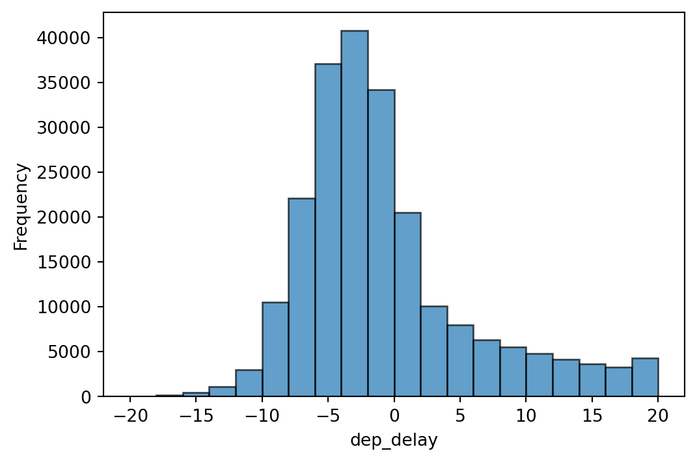
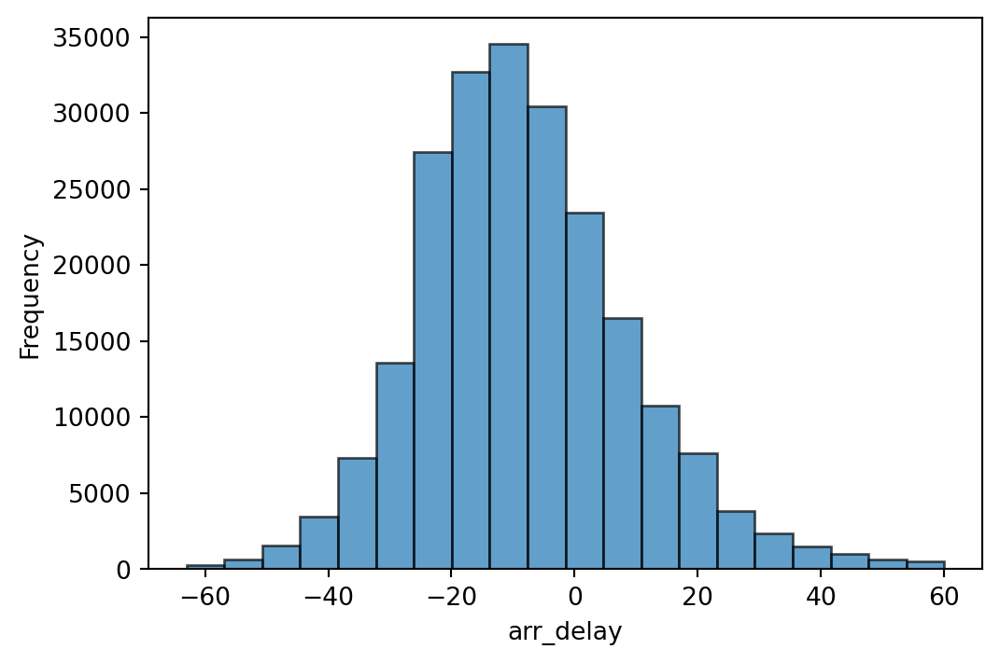
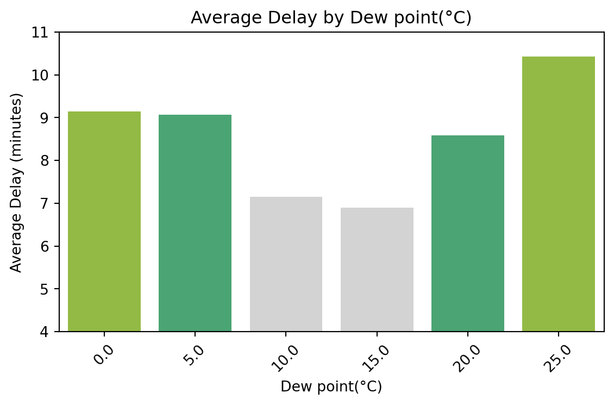
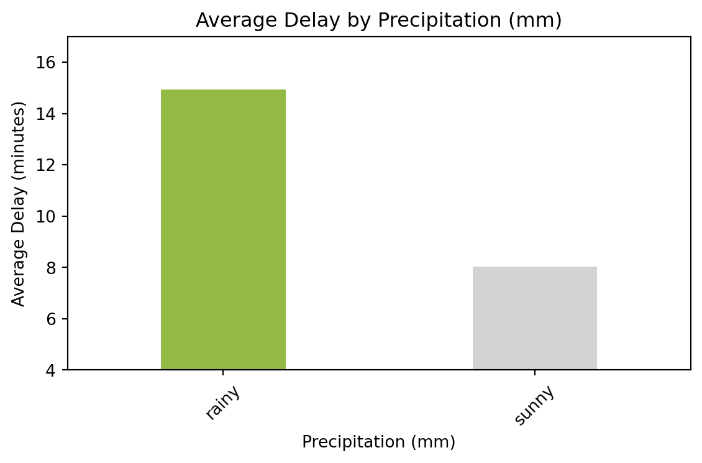
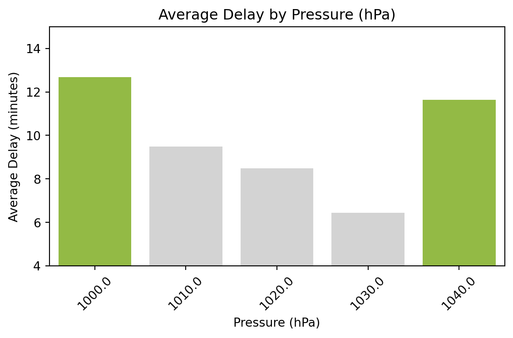

가독성을 위해 화씨(°F)를 섭씨(°C)로 변환
# 화씨(°F)를 섭씨(°C)로
# 변환하는 함수
def F_to_C(f):
return (f - 32) * 5 / 9
# 기온 구간 나누는 함수
def categorize_temp(t):
t_c = F_to_C(t)
if t_c <= 0: return 0
elif t_c <= 5: return 5
elif t_c <= 10: return 10
elif t_c <= 15: return 15
elif t_c <= 20: return 20
elif t_c <= 25: return 25
elif t_c <= 30: return 30
else: return 40
- 기온이 너무 낮으면 항공기 운항이 지연되는 경향이 있다.

- 이슬점이 너무 낮거나 높으면 항공기 운항이 지연되는 경향이 보인다.

- 습도가 너무 높으면 항공기 운항이 지연되는 경향이 있다.

- 가시거리가 짧을 수록 항공기 운항이 지연되는 경향이 있다.

- 풍속이 빠를수록 항공기 운항이 지연되는 경향이 보인다.

- 강수량이 있으면 항공기 운항이 지연되는 경향이 있다.

- 기압이 너무 낮거나 높으면 항공기 운항이 지연되는 경향이 보인다.
-(고기압은 일반적으로 맑고 안정적인 날씨를 제공하지만, 고기압 지역에서는 기온이 상승 가능성에 따라 고도가 높은 공항에서의 이륙 지연이 발생할 수 있다.)